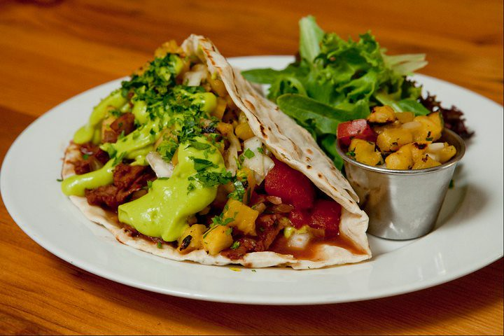

Vegan Tacos

Look at these fucking tacos
They're fucking tasty. Tastier than a meat taco, even. All without the guilt of murdering animals and destroying the environment (if those are things you care about; if not, whatever)
Yields more servings if you make more.
Ingredients
Spice Mix:
- 2 teaspoons ground ancho chile powder
- 1 teaspoon ground cumin
- 1/2 teaspoon ground coriander
- 1/2 teaspoon dried oregano
- 1/2 teaspoon salt
- 1/4 teaspoon ground fennel seed
Filling:
- 2 teaspoons olive oil
- 1 small onion, minced
- 2 cloves garlic, minced
- 2 cups cooked lentils
- 3 tablespoons tomato paste
- 2 tablespoons water
- 2 canned chipotle chiles
- 1 teaspoon hot sauce
Tacos:
- 8 corn tortillas
- 1 cup shredded lettuce
- 1 cop chopped tomatoes
- 1/4 cup chopped fresh cilantro
- 1 cup guacamole
- 1 lime, cut into 8 wedges
Steps
- Combine ancho chile powder, cumin, coriander, oregano, salt, and fennel in a small bowl.
- Heat oil in a large skillet over medium-high heat. Cook onion and garlic, stirring occasionally, until lightly browned, about 3 minutes. Add spice mixture and cook, stirring, until toasted, about 30 seconds.
- Reduce heat to medium and add cooked lentils, tomato paste, a few splashes of water, and chipotle peppers. Cook, mashing lightly with a fork and adding water if necessary, until lentils are heated through and hold together, about 5 minutes. Season with additional salt if needed and adobo or hot sauce.
- Lightly toast tortillas in a cast-iron skillet over medium heat. Spread about 1/3 cup filling down center of each tortilla. Top with lettuce, tomatoes, and cilantro. Serve with guacamole and lime wedges.